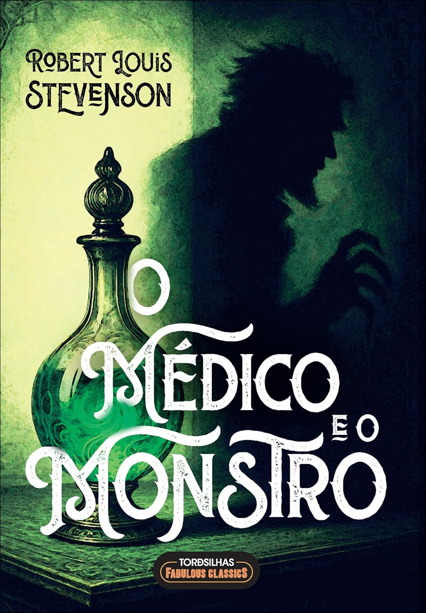

O Médico e o Monstro — Ciência, moralidade e o lado oculto
Autor: Robert Louis Stevenson
Gênero: Ficção gótica, Literatura clássica, Horror psicológico
Publicação: 1886
Páginas: varia conforme edição
🛒 Comprar Livro
Autor: Robert Louis Stevenson
Gênero: Ficção gótica, Literatura clássica, Horror psicológico
Publicação: 1886
Páginas: varia conforme edição
🛒 Comprar LivroO Médico e o Monstro conta a história do respeitável Dr. Henry Jekyll, um homem movido pela curiosidade científica e pelo desejo de separar os aspectos luminosos e sombrios da natureza humana. Seu experimento acaba criando o inquietante Mr. Hyde — uma versão livre de limites e moralidade.
Publicado em 1886, o livro se transformou em um marco da ficção gótica e segue até hoje inspirando adaptações, análises e debates sobre ética, identidade e psicologia.
No coração da obra está a ideia de que cada pessoa carrega em si impulsos contraditórios. Jekyll e Hyde são extremos de uma mesma alma, e o terror não surge apenas da transformação física, mas do reconhecimento de que o “monstro” sempre esteve presente — invisível, porém ativo.
O ponto de virada da leitura é perceber que Hyde não é um acidente. Ele é a materialização de algo que Jekyll tentou reprimir, controlar e esconder. A fronteira entre ciência e ambição se desfaz, e o horror passa a ser menos sobrenatural e mais profundamente humano.
É uma leitura rápida, porém impactante. Stevenson escreve de forma precisa, alternando tensão, atmosfera sombria e reflexões que continuam atuais. Mesmo curto, o livro provoca incômodo e desperta perguntas que permanecem ecoando depois da última página.
Para quem aprecia clássicos, suspense psicológico ou ficção que explora a moralidade humana, é uma obra essencial.
“A poção não era boa nem má — apenas libertava o que já estava aprisionado dentro de mim.”